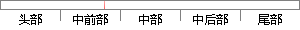

恶意域名提取过程主要是通过失效域名聚类结果，对请求每个新域名集合的主机组进行分析，判断组内主机在域名请求行为上是否具有组行为特征，提取出最终的恶意域名、感染主机、C&C服务器IP地址集合，并对分析结果进行评估。
片段位置图

相似结果|
1
原句片段：，判断组内主机在域名请求行为上是否具有组行为特征，提取出最终的恶意域名、感染主机、C&C服务器IP地址集合，并对分析结果进行评估。
相似片段 1：并将请求同一组新域名的主机集合作为检测对象,通过分析集合内主机在请求失效域名、新域名行为上是否具有组特性,提取出网络中的感染主机集合、C&C服务器使用的IP地址...
相似片段 2：当网络中存在多台感染相同 Bot 程序的主机时,这些感染主 机与正常主机相比,在...,判断组内主机在域名请求行为上是否具有 组行为特征 ,提取出最终的恶意域名、...
相似片段 3：当网络中存在多台 感染相同B 这些感染主 o t程序的主机时, 机与正常主机相比..., 判断组内主机在域名请求行为上是否具有 组行为特征 , 提取出最终的恶意域名 ...
|
※ 片段修改建议 ※
近似词参考：- 恶意：歹意
- 过程：进程 历程
- 主要：首要 重要
- 要是：如果
- 通过：经由过程
- 过失：不对 差错
- 结果：成果 成绩 成效 后果 了局 效果
- 请求：要求 恳求 哀求
- 每个：每一个
- 集合：调集 纠合 荟萃 鸠合 聚集 聚拢
- 进行：举行
- 分析：阐发 阐明 剖析
- 判断：判定 果断
- 请求：要求 恳求 哀求
- 行为：行动 举动
- 是否：是不是
- 具有：具备 拥有
- 行为：行动 举动
- 特征：特点 特性
- 取出：掏出
- 最终：终究 终极
- 恶意：歹意
- 感染：传染 熏染 沾染
- 地址：地点
- 集合：调集 纠合 荟萃 鸠合 聚集 聚拢
- 分析：阐发 阐明 剖析
- 结果：成果 成绩 成效 后果 了局 效果
- 进行：举行
系统自动生成语句：歹意域名提取进程首要是经由过程失效域名聚类成果，对要求每一个新域名调集的主机组举行阐发，判定组内主机在域名要求行动上是不是具备组行动特点，提掏出终究的歹意域名、传染主机、C&C服务器IP地点调集，并对阐发成果举行评估。
注：本片段修改建议为系统自动生成，仅供参考。